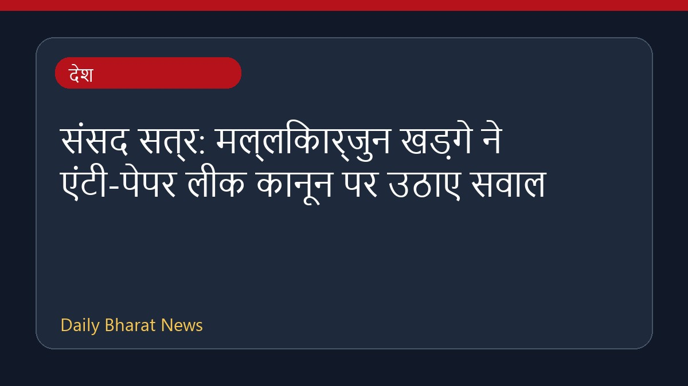

संसद सत्र: मल्लिकार्जुन खड़गे ने एंटी-पेपर लीक कानून पर उठाए सवाल

संसद के मानसून सत्र के दौरान राज्यसभा में विपक्ष के नेता मल्लिकार्जुन खड़गे ने एंटी-पेपर लीक बिल और नीट विरोध प्रदर्शन को लेकर केंद्र सरकार पर तीखा हमला बोला। खड़गे ने कानून की प्रभावशीलता पर सवाल उठाते हुए इसे छलावा बताया। इस बीच, उनके एक बयान को लेकर भाजपा ने आपत्ति जताई और इसे हिंसा की धमकी करार दिया। विपक्ष द्वारा गृह मंत्री अमित शाह की उपस्थिति की मांग और विरोध प्रदर्शनों पर कार्रवाई के बाद राज्यसभा की कार्यवाही को दो बार स्थगित करना पड़ा। इस मामले में विस्तृत जानकारी सीमित है।